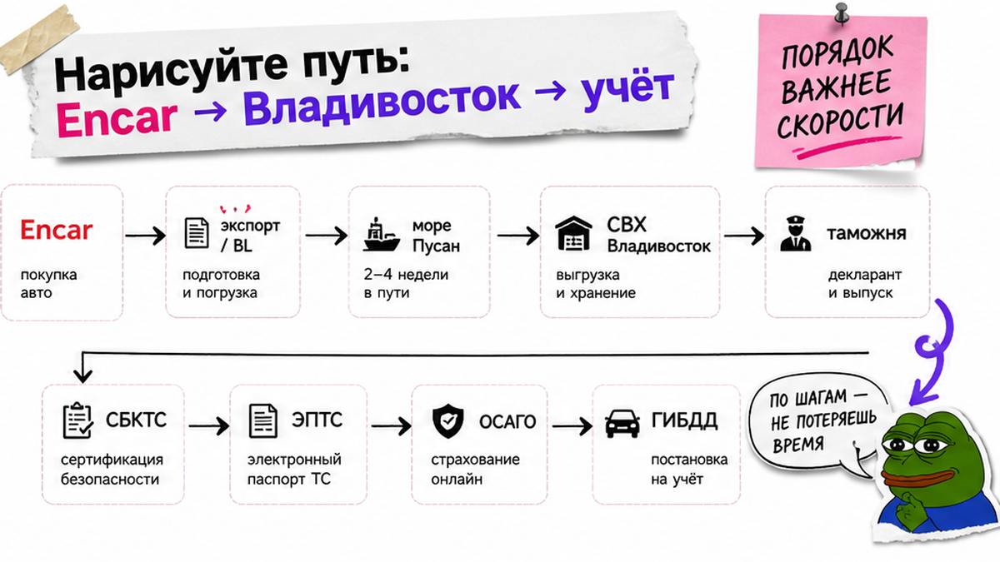
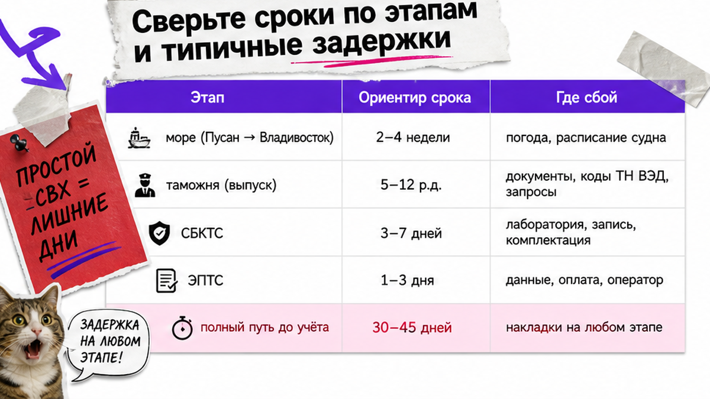
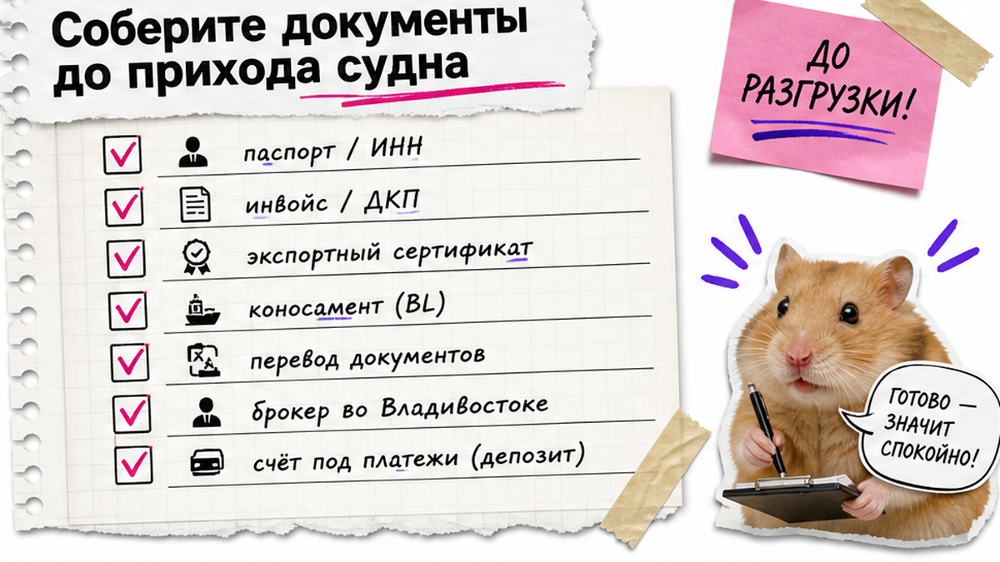

Антон из Краснодара увидел на Encar Kia K5, внёс депозит "пока не увели" – и только потом понял, что растаможка авто из Кореи это не "просто пошлина". Без экспортных бумаг машина уже ехала, а счёт за простой на складе во Владивостоке начал капать раньше, чем он разобрался в СБКТС. Ниже – живой таймлайн 2026: этапы, сроки и чеклист документов до оплаты, чтобы вы не повторили эту историю.
TL;DR / Быстрый инсайт: Растаможка через Владивосток – цепочка, а не один платёж: Encar → экспорт в Корее → море → СВХ → таможня → СБКТС → ЭПТС → ОСАГО → ГИБДД. Море обычно от нескольких дней до ~2–4 недель, таможня около 5–12 рабочих дней, лаборатория 3–7, ЭПТС 1–3. Полный путь часто 30–45 дней, при заминках до ~60. Точные суммы пошлин и утильсбора – только по вашему лоту у менеджера, не из чужого калькулятора в выдаче.
В выдаче 2026 почти везде калькуляторы и "цена под ключ". А у новичков чаще ломается не формула, а порядок этапов: без СБКТС нет ЭПТС, без ЭПТС нет ОСАГО и учёта. Именно здесь "зависают" корейские авто после выпуска с таможни.
СВХ – склад временного хранения у порта: машина ждёт оформление. СБКТС – справка лаборатории, что конструкция подходит для РФ. ЭПТС – электронный паспорт в госпосистеме (бумажный ПТС на импорт не выдают). Дальше разложим путь по шагам.

Боль новичка простая: кажется, что растаможка = один счёт. На практике это конвейер. Encar – крупная корейская витрина объявлений. Дальше нужен корейский резидент или партнёр: нерезиденту обычно не оформить экспортную декларацию и BL (коносамент – морской документ на груз) "сам прилетел и купил".
Схема пути:
Выбор на Encar → экспортные бумаги в Корее → море Пусан/Инчхон → СВХ Владивосток → таможня (платежи и выпуск) → СБКТС → ЭПТС → ОСАГО → ГИБДД
Для физлица ввоз для личного пользования идёт через декларацию (ПТД) по правилам ТК ЕАЭС: паспорт, данные на машину, право владения. Утильсбор при ввозе обязателен отдельно: без отметки об уплате ЭПТС и учёт ломаются. Детали ставок – в отдельной теме про утильсбор; здесь важнее не перепутать очередь шагов.
Корея даёт левый руль – это плюс для РФ и не путайте с Японией на этапе СБКТС. Хаб логистики Авто-Сейлс – Владивосток: порт, склад, выдача.
Делать: выписать цепочку на бумаге до депозита. Не делать: думать, что "оплатил пошлину – и можно на номера".

Сроки моря и сроки учёта – разные вещи. Типичная ошибка: ждать "две недели под ключ", хотя после порта ещё таможня и лаборатория.
| Этап | Ориентир срока | Где чаще сбой |
|---|---|---|
| Море Пусан/Инчхон → Владивосток | от нескольких дней до ~2–4 недель | линия, погода, сезонная перегрузка порта |
| Таможня после прихода судна | ~5–12 рабочих дней | нет пакета бумаг, корректировка стоимости |
| СБКТС (лаборатория) | ~3–7 рабочих дней | очередь, непроход по конструкции |
| ЭПТС после СБКТС | ~1–3 рабочих дня | нет СБКТС / нет отметки утильсбора |
| Полный путь до выдачи в городе РФ | часто ~30–45 дней, при заминках до ~60 | простой на СВХ из-за неготовых документов |
На СВХ Владивостока обычно есть льготный период порядка 5–10 суток (зависит от склада), дальше платный простой; предельный срок хранения по правилам – до 4 месяцев. На практике за ~7 дней реально закрыть таможню + лабораторию + ЭПТС, если бумаги готовы заранее. Если нет – счёт за хранение растёт быстрее, чем "ещё чуть-чуть подожду".
Делать: планировать буфер 30–45+ дней и отдельно считать простой. Не делать: смешивать "море 10 дней" с "уже на учёте".

Страх "машина зависнет во Владивостоке" лечится не нервами, а пакетом до разгрузки. Например, если инвойс, перевод и данные владельца собирают уже на причале, льготные сутки СВХ сгорают впустую.
ТПО – таможенный приходный ордер, по сути квитанция после оплаты платежей: он подтверждает выпуск. Без полного пакета брокер не волшебник: корректировка таможенной стоимости и простой СВХ – частая связка в реальных кейсах.
Делать: закрыть документы и счёт до льготного окна СВХ. Не делать: откладывать бумаги "на потом, когда приедет".
Хочется цифру "прямо в статье" – понятно. Но ставка зависит от возраста, объёма двигателя, статуса физлица и актуальных правил на дату сделки. Статичный калькулятор в блоге быстро врёт и создаёт ложное чувство точности.
Факторы для запроса менеджеру: год и объём, тип топлива, кто оформляет (физлицо), маршрут через Владивосток, нужен ли "под ключ" до номеров. Актуальный расчёт – в каталоге avto-sales125.ru; детали по конкретному лоту – в Telegram @avtosales125. Форм на этой странице нет.
Официальный контур – ФТС и ТК ЕАЭС, брокер здесь сервис оформления, а не "договорённости на таможне". Чужой онлайн-калькулятор из выдачи может быть интересным упражнением, но не договором на ваш VIN.
Делать: считать смету по вашему лоту у менеджера. Не делать: бронировать депозит по скрину чужого "итога под ключ".
Первый безопасный шаг без полёта в Сеул: понять, кто везёт и кто отвечает за бумаги. Если вам обещают "просто перевод продавцу" без экспортного пакета – стоп.
Критерий результата простой: вы можете объяснить другому человеку 7–8 этапов и сказать, на каком шаге машина уже "на учёте". Если цепочка на пальцах не складывается – депозит рано.
Делать: пройти чеклист сверху вниз. Не делать: платить "чтобы не увели", пока нет ответа, кто закроет экспорт и СВХ.
Нужен разбор лота и сопровождение через Владивосток – откройте каталог Авто-Сейлс и напишите менеджеру. Офис: Владивосток, Днепровская 40а, стр. 4.
Материал проверен: редакция Авто-Сейлс (эксперты по авто под заказ из Японии, Кореи и Китая).
Достоверность: факты сверены с открытыми источниками по ввозу ТС (контур ФТС / ТК ЕАЭС), практическими гайдами по СБКТС/ЭПТС и СВХ Владивостока, а также практикой сопровождения заказов на 2026-07-19; актуальные расчёты платежей – только по запросу менеджеру, без статичных сумм в тексте.
Считайте минимум восемь узлов: выбор на Encar, экспортные бумаги, море, СВХ, таможня, СБКТС, ЭПТС, затем ОСАГО и ГИБДД. "Растаможка" в быту часто означает только платежи на таможне – этого мало для учёта.
Логика порта Владивосток похожа, но площадки и руль другие: Корея – Encar и левый руль, Япония – аукционы и чаще правый. Сроки моря и таможни сравнимы по вилкам, но документы экспорта и проверка лота готовятся по-разному. Не копируйте чеклист "один в один" со статьи про Японию.
Юридически физлицо может декларировать ввоз, но на практике в Корее почти всегда нужен местный партнёр на экспорт и BL, а во Владивостоке – брокер и лаборатория. "Сам прилетел" чаще упирается в бумаги, не в смелость.
Без СБКТС не будет нормального ЭПТС, без ЭПТС – ОСАГО и регистрации в ГИБДД. Машина может уже "выйти" с таможни и всё равно стоять мёртвым грузом. Делайте лабораторию сразу после выпуска, в аккредитованной организации.
Ориентир таможни 5–12 рабочих дней, плюс СБКТС 3–7 и ЭПТС 1–3. Итого после порта часто ещё ~1–2 недели при готовых документах. Заложите запас на очередь и корректировку стоимости.
Смотрите статус в системе электронных паспортов и на Госуслугах по данным авто. На учёт записывайтесь только после ЭПТС, уплаты утильсбора (отметка) и полиса ОСАГО.